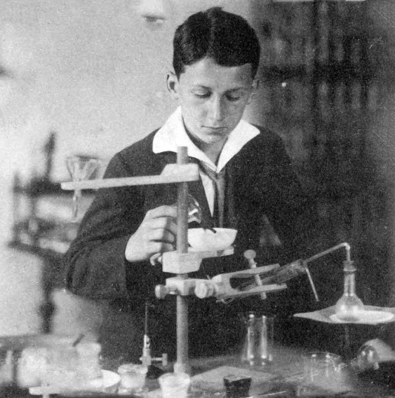
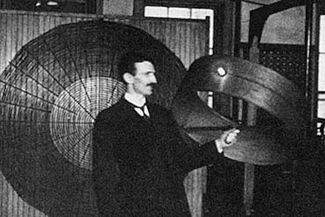
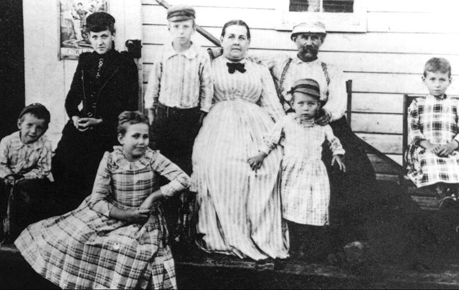

Детство и юность
Никола родился в 1856 году в семье священнослужителя в селе Смиляны. Спустя время семья переезжает в Госпич, где Тесла заканчивает младшие классы. Далее мальчик поступает в гимназию, его предоставляют самому себе, он помогает по дому и подрабатывает на заводе. В 1870 году устраивается в высшее училище. Через три года после окончания будущий ученый решает посвятить себе духовным наукам, но жизнь распоряжается иначе. В селе начинается эпидемия холеры и Никола заболевает на девять месяцев. Это было самое сложное время в биографии юноши. Он был при смерти и отец, чтобы подбодрить сына, разрешил ему заниматься инженерным делом, а не духовенством. Это придало сил Николе, и он выздоровел. Зато происшествие оказало огромное значение на бытовую и личную жизнь, так как Тесла постоянно мыл руки, был требователен к еде и месту проживания. Плюсом из болезни стали видения в виде вспышек света, в которых Никола видел образы будущих устройств.
В 1875 году Тесла становится слушателем высшего технического училища и разрабатывает теорию работы машин на переменном токе. Эту теорию все высмеяли, что толкает Николу к увлечению азартными играми. Из-за этого он не сдает выпускные экзамены, а еще позже умирает отец. Чтобы помочь родным парень устраивается на работу в Госпиче, но его обучение оплачивают дядья, поэтому он уезжает в Прагу и поступает на философский факультет. Позднее отправляется в Венгрию.
Карьера и практическая деятельность
В 1881 году Тесла переехал в Будапешт и начал работать в инженерном отделении, здесь он смог пробовать новое и воплощать в жизнь личные идеи, проверять некоторые теории. Основной целью стало создание электрического мотора на переменном токе. Почти за два месяца Тесла создает однофазные и двухфазные моторы, различные модификации. Его открытия позволяют передавать энергию на расстояния, питать светильники и целые фабрики. В 1882 году переезжает во Францию и начинает работать у Эдисона. Тогда же ученый создает асинхронный двигатель и представляет его миру. Через два года Тесла переезжает в Америку и устраивается в другую компанию Эдисона. Здесь он планирует создавать свои инновационные машины, что очень раздражает Эдисона, из-за чего возникает спор. Так как Тесле удается создать около 25 вариаций устройств Эдисона, последний долен заплатить ему миллион долларов, но Томас отказывается от своих обязательств.
Ученый становится безработным и никому ненужным, он вынужден рыть канавы и выживать. Но он знакомится с Брауном, который рассказывает все светилам науки об идеях Теслы. Поэтому для него открывают лабораторию, которая позднее становится фирмой Теслы по выпуску дуговых осветительных ламп.
В 1888 году происходит знакомство Николы с Джорджем Вестингаузом, который выкупает у него почти все патенты и приглашает к себе на работу. Ученый отказывается, так как это ограничивает свободу и рабочий процесс. Следующие семь лет Никола занимается изучением магнитных полей. В 1895 году его лаборатория сгорает до основания, но при финансовой поддержку ученый восстанавливает все изобретения и документацию по памяти.
Немного позднее он переезжает в Колорадо-Спрингс, где проводит эксперименты над шаровой молнией.
В 1899 году Тесла покупает небольшой земельный участок и проводит там изучение атмосферного электричества, но вынужден продать собственность из-за долгов и кредитов. За год Никола получил десятки патентов на новые изобретения. В 1915 получает Нобелевскую премию, изобрел средства для обнаружения подводных лодок. Уже в старости Теслу сбила машина, он получил травму, что повлекло воспаление легких и инвалидность. Умер Никола 7 января 1943 года, но тело его обнаружили только через два дня после кончины. Как известно, его тело кремировали, а прах развеяли. А многие изобретения и дневники ученого были изъяты правительством, а после засекречены. Годы жизни Теслы 1856-1943 года.
Семья и личная жизнь
Семья Теслы жила в селе Смилян в 6 км от города Госпич, главного города исторической провинции Лика, входившей в то время в состав Австро-Венгерской империи. Отец - Милутин Тесла (1819-1879), священник Сремской епархии сербской православной церкви, серб. Мать - Георгина (Джука) Тесла (1822-1892), в девичестве Мандич, была дочерью священника. 28 июня (10 июля) 1856 года в семье появился четвёртый ребёнок - Никола. Всего в семье было пять детей: три дочери - Милка, Ангелина и Марица и два сына - Никола и его старший брат Дане. Когда Николе было пять лет, его брат погиб, упав с коня.
Личная жизнь ученого не сложилась, потому что у него был непростой характер и много необычных привычек. В него влюблялись, но он был холоден и ни на ком не женился. Причиной тому было убеждение, что семья и дети мешают научной работе. Хотя при смерти Никола рассказал, что это было неверным решением. У ученого никогда не было собственного жилища, он всегда жил в лабораториях и отдыхал пару часов, посвящая все время исследованиям и экспериментам.
Изобретения и научные работы

Всего у Теслы насчитывается более 700 изобретений и патентов, некоторые из которых являются важнейшими историческими вехами современного электричества. Вероятно, Тесла придумал радио раньше Маркони и Попова, а также работал с рентгеновскими лучами до их официального открытия Вильгельмом Рентгеном
Никола Тесла впервые придумал световой носитель – флуоресцентную лампу, которую с опозданием на 40 лет «откроют» его современники. Свое изобретение ученый продемонстрировал на Всемирной выставке, причем весьма необычным способом. Он согнул стеклянные трубки лампы в форме имен известных ученых, добиваясь эффекта свечения каждой буквы. Так посетители стали свидетелями первой неоновой рекламы.
Катушки Теслы – вот еще одно не менее знаменитое изобретение ученого, которое доказало его идею о том, что Земля – это огромный магнит, способный генерировать электричество, а значит энергию можно телепортировать из одного уголка Земли в другой, как в случае с радиоприемником.
Работая на Вестингауза, Никола запатентовал применение многофазных систем переменного тока. Открытие переменного тока послужило началом «войны» между взглядами Эдисона и Теслы. Они по-разному видели то, как должен передаваться и проводиться ток. В итоге Эдисон подарил миру электрический стул, а Тесла – многофазную систему переменного тока, которая до сих пор используется в наших домах для генерации и поставки электричества.
У Николы Теслы всю жизнь была мечта – создать двигатель, работающий без бензина на одной электроэнергии или, как говорил сам ученый, на «эфире». Теория «эфира» подарила человечеству новый вид энергии – электромагнитные волны, которые стали бичом в эпоху 1880-х гг. Электродвигатель ученого – это большой технологический прорыв, позволивший создать промышленные вентиляторы, домашнюю электронику, электронные часы и многое другое.
Ученый открыл рентгеновские лучи совершенно случайно, нечаянно сфотографировав своего друга Марка Твена ранней версией флюоресцирующей трубки под названием «Гейсслер». Тогда Тесла не придал этому значению, решив, что излучения вредны для человека и изучать их стоит осторожно, избегая длительного наблюдения. Открытие впервые запатентовал немецкий физик Вильгельм Рентген, который вскоре изобрел рентгеновскую установку.
Изобретение электродинамической индукционной лампы по мнению гениального инженера, имело большее преимущество по сравнению с лампами накаливания, которые применялись современниками Теслы.

Создание радио стало еще одним доказательством гипотезы ученого, что весь окружающий мир состоит из своего рода частот и волн, которые можно передать при помощи радиоприемника. Несмотря на то, что изобретение было дважды запатентовано своим первооткрывателем, вскоре идею присвоил итальянский радиотехник Гуельмо Маркони, предположительно состоявший в сговоре с Томасом Эдисоном и Эндрю Карнеги. А эти люди обладали достаточной властью, чтобы повлиять на решение патентной комиссии.
Дистанционное управление было естественным продолжением радио. Впервые у оператора появилась возможность управлять удаленным объектом – подлодкой, прибегая лишь к батареям и системе переключателей.
В 1898 г. Никола Тесла впервые представил миру подлодку, работающую на электродвигателе. При этом техника работала в автоматическом режиме, дистанционно, через передатчик.
Ученый придумал концепцию искусственного интеллекта, заявив о том, что все живые существа действуют под влиянием внешних импульсов.
Беспроводные коммуникации и безграничная свободная энергия- самая провальная работа Николы Теслы. Изобретатель очень желал создать бесперебойный источник энергоинформации, аналог сегодняшних Интернета и телевидения. На проект было затрачено 1,5 млн долларов, но в итоге строительство знаменитой башни «Варденклифф» было приостановлено и засекречено.
Лазер Теслы получил свое распространение в разных сферах деятельности начиная с медицины и заканчивая современными цифровыми медиа. В контексте технологических инноваций открытие перекочевало и в литературу, научно-популярную фантастику с персонажами Джорджей Лукаса и Оруэлла.
Патент на озоновый генератор получен Теслой в 1896 г. В данный момент запрещен для использования в США.
Безлопастная турбина представляет собой вид двигателя, который работает при помощи вращающихся дисков. Двигатель можно использовать в скоростных судах на воздушной подушке или в простых насосах. Мотор Теслы по своей мощности превосходит обычные турбины, считается в 20 раз эффективнее.
Фотоаппарат для мыслей - самая диковинная идея ученого, которую он так и не смог воплотить в реальность. Тесла был убежден, что можно придумать средство по фотографированию мыслей, и это позволит визуализировать внутренний мир человека, приоткрыть завесу его тайн и желаний.
Летательный аппарат с вертикальным взлетом - последнее запатентованное изобретение Николы Теслы, датируемое 1928 г.